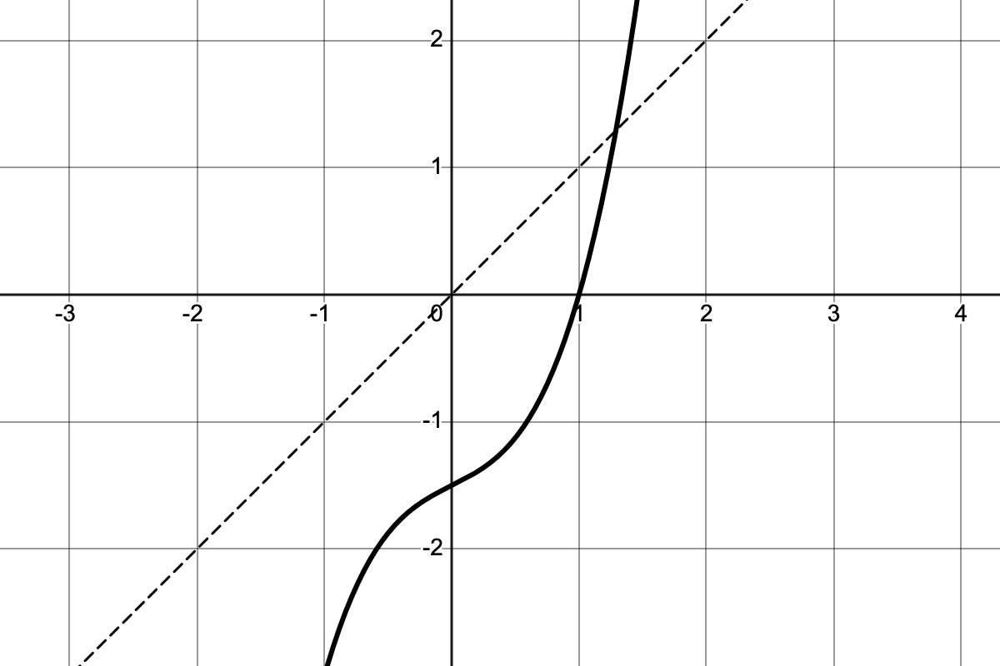

Review for exam 2
We have our second exam this coming Friday, October 16th. The problems on the exam will be very much like the problems you see here. I will go over this problem sheet in class on Wednesday but it will help you immensely to think about it on your own first so please work it out to the best of your ability prior to meeting on Wednesday.
Problems
Use the differentiation rules to compute the derivatives of the following functions.
- \(\displaystyle f(x) = x^2 \, 2^x\)
- \(\displaystyle f(x) = x^3 e^{2x}\)
- \(\displaystyle f(x) = \dfrac{\ln(x)}{x^2}\)
- \(\displaystyle f(x) = (x^2 + 1)\sin(x)\)
- \(\displaystyle f(x) = e^{x^2 + 3x}\)
- \(\displaystyle f(x) = \tan(x)\cos(x^2)\)
- \(\displaystyle f(x) = \dfrac{x^2 e^x}{1 + x^3}\)
- \(\displaystyle f(x) = \ln(\sin(x))\)
- \(\displaystyle f(x) = x^5 \tan(3x)\)
- \(\displaystyle f(x) = e^{\sin(x^2)}\)
- \(\displaystyle f(x) = \dfrac{\sqrt{x} + e^x}{x^2 + 1}\)
- \(\displaystyle f(x) = x^2 e^{2x} \sin(\pi x) \cos(x)\)
- \(\displaystyle f(x) = \arcsin(3x) + \arctan(x^3)\)
Find the values of the following:
- \(\cos(-5\pi)\)
- \(\sin(9\pi/2)\)
- \(\arcsin(1)\)
Use logarithmic differentiation to find the derivatives of the following expontialish functions:
- \(f(x) = 7^x\)
- \(f(x) = x^{2x}\)
Use logarithmic differentiation to evaluate the derivatives of the following products and quotients:
- \(\displaystyle f(x) = x^2 e^{2x} \sin(\pi x) \cos(x)\)
- \(\displaystyle f(x) = \frac{e^x \sqrt{x^2+1}}{\sin(x)\sqrt{x^2-1}}\)
Sketch the graph of \[f(x) = 3\sin\left(\frac{\pi}{2} x\right).\]
Be sure to clearly indicate the \(x\) and \(y\) intercepts, as well as the maximum and minimum values.Use the fact that \(\displaystyle \lim_{\theta\to0} \sin(\theta)/\theta = 1\) to compute
- \(\displaystyle \lim_{x\to0}\frac{\sin(15x)}{4x}\)
- \(\displaystyle \lim_{h\to0}\frac{\cos(h)-1}{h}\)
Supposing that \(f\) and \(g\) are differentiable functions, use the definition of the derivative to show that
- \(\displaystyle \frac{d}{dx} f(x)+3g(x) = f'(x)+3g'(x)\)
- \(\displaystyle \frac{d}{dx} x^2\,f(x) = 2x\,f(x)+x^2\,f'(x)\)
The graph of \(f(x)=x^{3}+\frac{1}{2}x-\frac{3}{2}\), together with the line \(y=x\), is shown in Figure 1.
- Sketch the graph of of \(f^{-1}(x)\) right on the same set of axes.
- Evaluate \((f^{-1})'(0)\).
Figures

Questions
If you’d like to ask a question about or reply to a question on this sheet, you can do so by pressing the “Reply on Discourse” button below.
Review for exam 2 – Mark’s Math
Review for exam 2 – Mark’s Math
Review for exam 2 – Mark’s Math
Mark’s Math